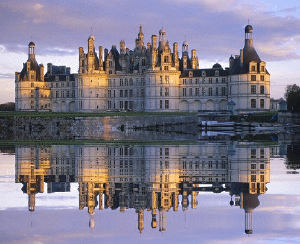
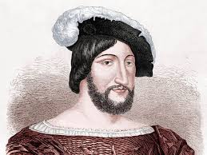

-
Chambord
Le grand
Un peu d'histoire
Le roi François Ier décide la construction du château de Chambord en 1519 sur des terres marécageuses, au bord de la rivière Cosson et au centre d'une forêt très giboyeuse, pour en faire « un grand, bel et somptueux édifice ». Un édifice qui doit lui permettre d'assouvir sa passion pour la chasse.
François Ier
François Iᵉʳ est sacré roi de France le 25 janvier 1515 dans la cathédrale de Reims. Il règne jusqu’à sa mort en 1547. Fils de Charles d’Angoulême et de Louise de Savoie, il appartient à la branche de Valois-Angoulême de la dynastie capétienne.
Horaires de visite

- Le parc est ouvert en libre accès tous les jours.
- Le château est ouvert toute l’année sauf les 1er janvier et le 25 décembre.
- Le château sera également fermé le 26 novembre 2018.
- du 1 novembre au 31 mars : de 9h à 17h (Basse saison)
- du 1er avril au 31 octobre : de 9h à 18h (Haute saison)
- Dernier accès ½ heure avant la fermeture du château
- Fermeture des jardins à la française 30 minutes avant la fermeture du château.
Comment y aller
En voiture
A moins de 2 heures au sud de Paris et a 15 km de Blois.
Par l’autoroute A10, sortie Mer (n°16) ou Blois (n°17).
Par l’autoroute A85, sortie Selles-sur-Cher (n°13).
Par l’autoroute A71, sortie Lamotte-Beuvron (n°3).
En train
Train depuis la gare de Paris – Austerlitz, arrêt Blois-Chambord (environ 1h20) ou Mer (environ 1h40)
avec la SNCF. Réservations et billets sur Voyages-SNCF ou Captain Train.
Tarif préférentiel sur les billets d’entrées plein tarif aux visiteurs originaires de Paris porteurs d’un titre de transport SNCF et sur présentation du billet de train (du jour même) : 11 euros au
Pour les enfants

Pars à la rencontre de Julien le maître-horloger, Frère Thomas, la comtesse Eugénie de la Plume ou encore Gaspard, garde Écossais de François Ier. Témoins des grandes heures de l’histoire de Chambord, ils t’entraîneront avec tes parents dans une belle aventure à travers le château.
- Visite conseillée aux enfants de 5 à 10 ans accompagnés de leurs parents. Groupe limité à 30 personnes.
- durée 1h30
- Tarifs : 6 € par adulte / 4 € de 5 à 17 ans (en sus du droit d’entrée).